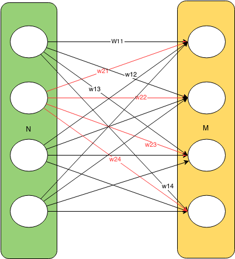
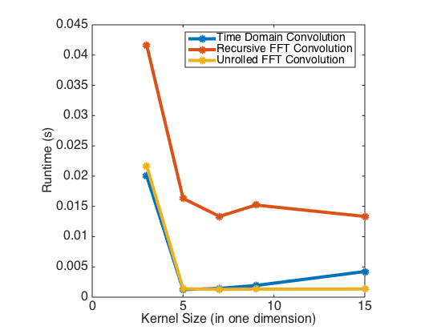
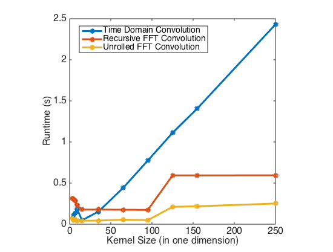

Proposal
Checkpoint
Summary
Neurophi is a C++ framework with a MATLAB interface for doing fast, parallel convolutional neural network (CNN) training, particularly for large, high-res images.
Motivation
There is increasing interest in classifying large, high-resolution images. Social networking sites like Facebook must do fast, automated facial recognition of user-uploaded photos. As a result, the ImageNet database of large images is replacing many legacy databases of 32x32 images to become the new standard for training neural networks to do image classification. In some applications such as image denoising, it also beneficial to convolve an image with a large filter. However, many existing parallel CNN training frameworks, including Caffe and CudaConvnet, continue to optimize their convolutions for small images and kernels. NeuroPhi differentiates itself from existing parallel CNN training frameworks by computing convolutions in the Fourier domain instead of the time domain, which is optimal for large images and kernels. Unlike the existing parallel CNN training frameworks that rely on CUDA and GPU computation, NeuroPhi's target hardware is a CPU and Intel Xeon Phi Coprocessor. Neural network operations are computationally dense and highly parallelizable; as GPU core counts continue to increase, GPU ANN training is not compute limited, but bandwith limited by the rate at which data can be offloaded to the GPU. The Xeon Phi coprocessor, Intel's competitor to NVIDIA's Tesla, supports code written for x86 architecture, and therefore has the potential to run ANN training algorithms with fewer bandwidth limited offloads. By writing NeuroPhi for CPU and Xeon Phis, we also give users the convenience of extending the framework with standard C++ parallelization tools including OpenMP, Cilk, and ISPC.
Background
Artificial neural networks (ANNs) are a biologically-inspired machine learning method of solving classes of problems that require learning. Given a class of simple functions F and a set of observations O, an ANN will learn the transfer functions for each node or neuron in one or more hidden layers of a network such that the network optimally performs feature extraction and classification. The ability to learn using a hierarchy of simple transfer functions has made ANNs key computational models for applications such as computer vision and speech recognition. However, large neural networks--which may have several hidden layers, thousands to millions of nodes per layer, and thousands to millions of edges between layers--are very computationally expensive to train. A common supervised ANN training algorithm known as backpropagation iteratively updates the weights of the network to minimize a loss function--the difference between a known, desired network output and the current network output--by determining the contribution of each input weight and bias in the network to the loss function. The basic steps of backpropagation are as follows
- Initialize the input layer of the network to include an input for bias
- Propagate the activity forward for each layer of the network
- Calculate the error at the output layer
- Back-propagate the error through the other network layers
- Update the weights of the network
Convolutional neural networks are a subclass of feed-forward ANNs that reduce the number of parameters required to do efficient feature extraction by applying the same filter(s) to several contiguous regions of an image. The feature extraction phase of the learning process may have many layers, including, most notably:
Convolutional layers
The input parameters of convolutional layers are a set of learnable filters. Each one of these filters is then convolved with the input volume to produce its output. The process of convolution can be expressed by the following formula in 1D
 In 2D this can be visualized as the following:
In 2D this can be visualized as the following:
 The following is a naive implementation of 2D convolution:
The following is a naive implementation of 2D convolution:
for w in 1..W
for h in 1..H
for x in 1..K
for y in 1..K
output(w, h) += input(w+x, h+y) * filter(x, y)
end
end
end
end
In order to reduce output variance, pooling layers simply take the max or average value of a feature over a region of the image. This ensures that the network will have the same output for small translations of the input image.
The feature extraction layers are followed classification architecture, which generally consists of...
Fully connected layersThese layers consist of the classic artificial neural network computational units with all-to-all connections between layers:

Approach
We began our work from the existing ConvNet framework, which supports serial CNN training on a CPU, very minimal parallelization for CNN training on a CPU, and GPU CNN training using CudaConvnet. We aimed to dramatically increase the parallelization of the CPU version of ConvNet, make it suitable for doing CNN training/classification on large images, and offload some of its computations to the Xeon Phi coprocessor.
Neural network training consists of forward propagation, backwards propagation, and weight updates of the various layeys of the network. We timed ConvNet's serial CPU implementation of CNN training in the computationally intensive stages of forward propagation, backwards propagation, and weight updates for the convolutional, fully-connected, and scaling layers, and determined that most of the time during network training was spent on convolutional layer computations. Back propgation through the convolutional layer was particularly slow, and this training stage is dominated by image convolutions. We therefore decided to focus our efforts on optimizing the parallelization of the actual convolution operation.
NeuroPhi's convolutional layer uses Fast Fourier Transforms, which transform the convolution operator into a simple element-wise product of the FFT of the image and FFT of the kernel. Though there is overhead in computing an FFT and inverse FFT, the convolution in the Fourier domain is highly vectorizable and is only O(nlogn) compared to the O(n^2) time domain implementation.
One common complaint of the FFT convolution implementation is that it doubles the memory useage of the convolution operation, since the convolution kernel must be padded to match the size of the input. However, a trick can be employed for convolutions applied to images. A convolution input typically has a real and imaginary component. Since images have only real components, the expanded kernel can be made to occupy the "complex" portion of the image. This halves the memory useage of the computation and approximately halves the latency of the operation, since only one FFT is now required.
Another important optimization for a parallel CNN training framework is concurrent training on multiple images, known as parallel batch processing. New network weights are calculated concurrently over multiple images, and the weights from several images are then reduced so that a single weight change is applied to the network for a batch of images. This can be acheived by multithreading image computations through the network and heeding the critical region in which weight computations across images (threads) are summed.
Results
All results below were obtained by running code on a single node oflatedays, on two, six-core Xeon e5-2620 v3 processors.
We compared three implementations of image convolution: 1) the naive, time domain implementation pictured in the background section 2) A recursive FFT implementation of convolution, new to NeuroPhi, and 3) An unrolled FFT implementation of convolution, new to NeuroPhi. Convolution runtimes on 512x512 pixel images (roughly the average size of images in the ImagNet database) for serial versions of the three algorithms as a function of kernel size are shown below. While runtime quickly blows up for large kernel sizes in the time domain, it remains fairly constant over kernel sizes in the two Fourier domain algorithms.
We then implemented parallelized versions of all three algorithms. The time domain algorithm was parallelized with OpenMP multi-threading and ISPC vector intrinsics. The recursive FFT algorithm was parellized with cilk_spawn's fork-and-join parallelism. The unrolled FFT algorithm was already so fast after parallelizing it with ISPC vector intrinsics that spawning new threads was generally too much overhead and just incurred latency. Cilk had too much overhead and only a single for loop was efficiently parallelized with OpenMP. It is also worth noting that while OpenMP provides #pragma vector and #pragma simd directives for vector operations, we got signficantly better speedup by writing vector intrinsics with ISPC. Runtimes of all three parallel implementations on 512x512 pixel images as a function of kernel size are shown below. Once again, while runtime quickly blows up for large kernel sizes in the parallel time domain algorithm, it remains fairly constant over kernel sizes in the two parallel Fourier domain algorithms.
Serial implementation to parallel implementation speed-ups for the three algorithms are shown below.
Our fastest convolution performance was acheived using the unrolled, vectorized FFT with the complex component convolution trick previously described, manual control of the thread count to match the number of execution contexts on a latedays machine, and the THREAD_AFFINITY compiler flag, which...
We observe that the time-domain convolutional layer implementation outperforms both FFT implementations for small kernel sizes, but the unrolled FFT begins to outperform the time domain implementation as kernel size increases. The effeciency of convolutions in the Fourier domain is dependent on image size as well as kernel size. Though many popular neural network image datasets use 32x32, many images that one might want to classify with a CNN in practice are much larger. We tested our algorithms on the average size of images found in ImageNet, a premier dataset of large images for neural network training. The run times for the three convolutional layer implementations for 512x512 images as a function of kernel size are shown below. FFT implementations far outperform the time domain implementation for large images and kernel sizes.
